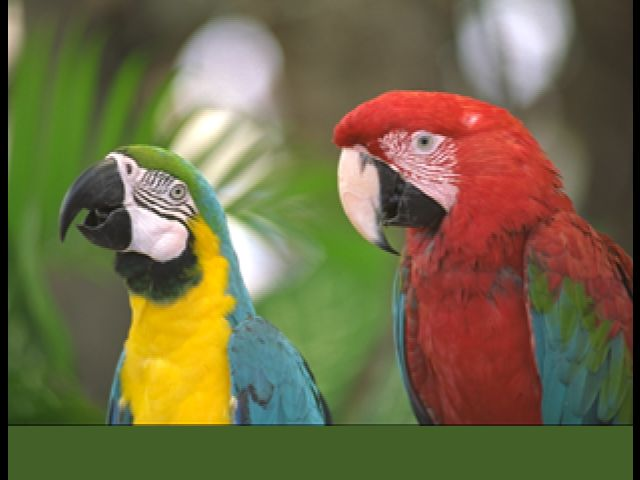
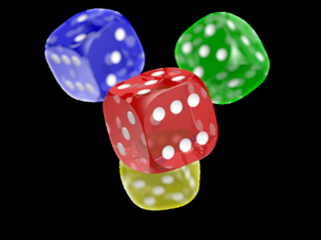

- Generated by
 1.16.1
1.16.1
|
N64 QOI Demo
A N64 homebrew app that opens QOI images from ROM
|
An image viewer that loads QOI images on N64


Go to this page to get the latest ROM: https://github.com/Aftersol/n64_qoi_dec/releases/
The maximum supported width is 320px and the maximum supported height is 240px. This step assumes you have FFMPEG installed.
For pixel art, the flags will scale the image using the nearest neighbor flag: -sws_flags neighbor This is useful for scaling up pixel art images
This tutorial assumes you have your N64 Toolchain set up including GCC for MIPS. Make sure you are on the preview branch of libdragon.
Clone this repository with --recurse-submodules or if you haven't run:
Initialize libdragon:
Then run make to build this project:
Everything in the src folder is licensed under MIT License
In the filesystem folder the following images are in the public domain:
The rest of the images in the filesystem folder are under their respective licenses